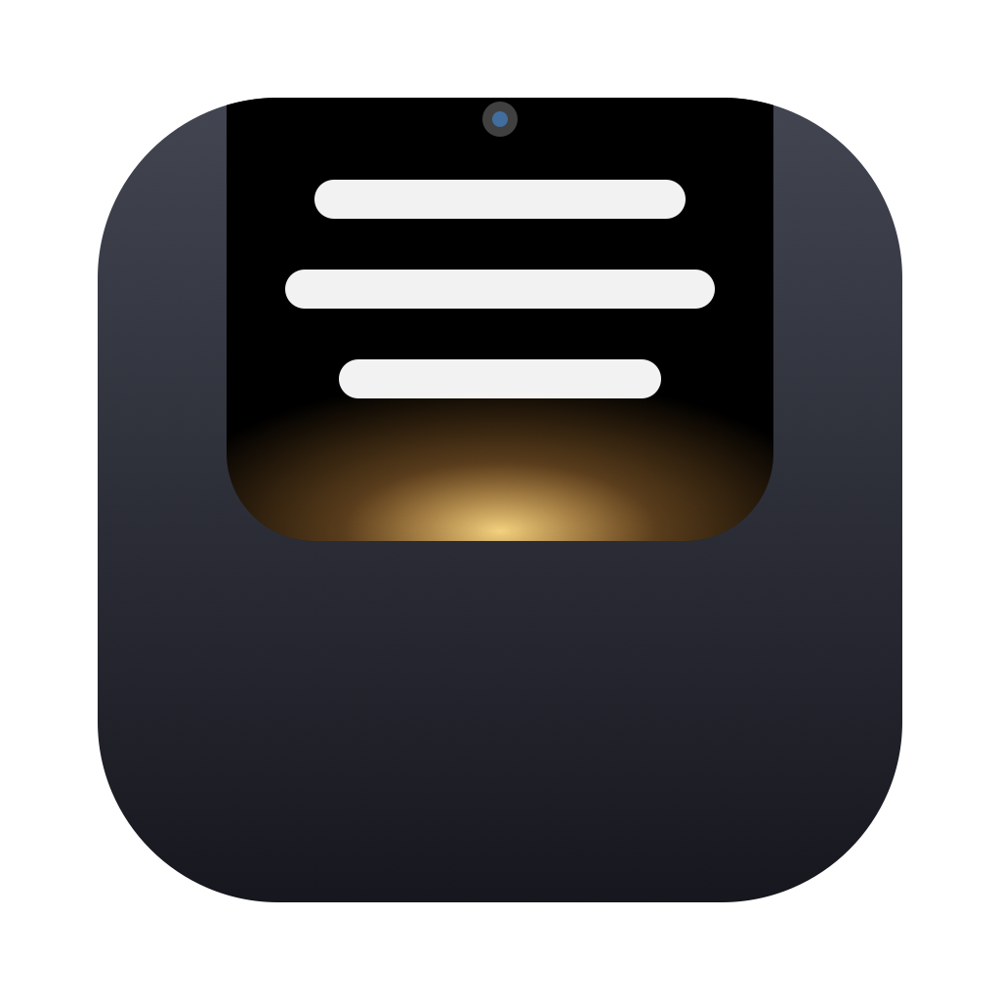

EyeLineEyeLine is a teleprompter that hangs from your MacBook's notch, right under the camera. Your audience sees you looking at them. They never see the script.
Download for MacFree and open source · macOS 14 or later · Apple silicon and Intel
Hi everyone, thanks for joining.
Today I want to walk you through three things we shipped this month.
First, the new onboarding flow. Sign-ups are up and drop-off is down.
Second, the faster search. Results now load in under a second.
And third, the part I'm most excited about.
Let me share my screen.
The panel grows out of the notch, so the words sit next to your camera and your gaze stays on the call.
It asks macOS to keep it out of screen capture. Share your screen or record a video and the prompter isn't in it.
Soft light at the bottom rises as you speak and fades when you pause. Only loudness is measured; nothing is recorded.
Pick a speed, or let it scroll only while you talk. Click to pause, scroll to rewind, drag the corner to resize.
xattr -dr com.apple.quarantine /Applications/EyeLine.app